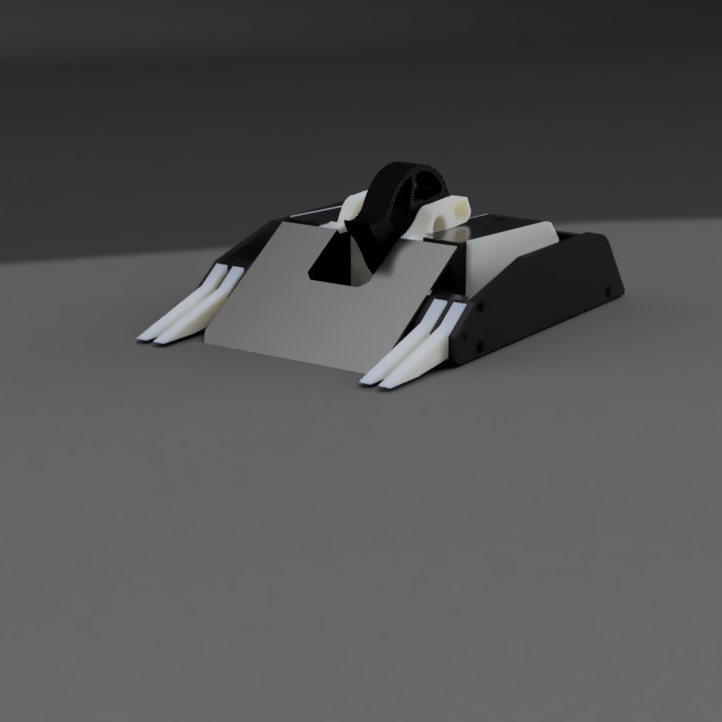
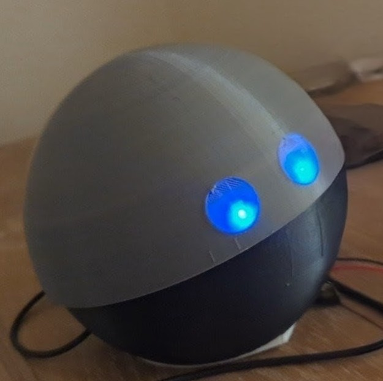
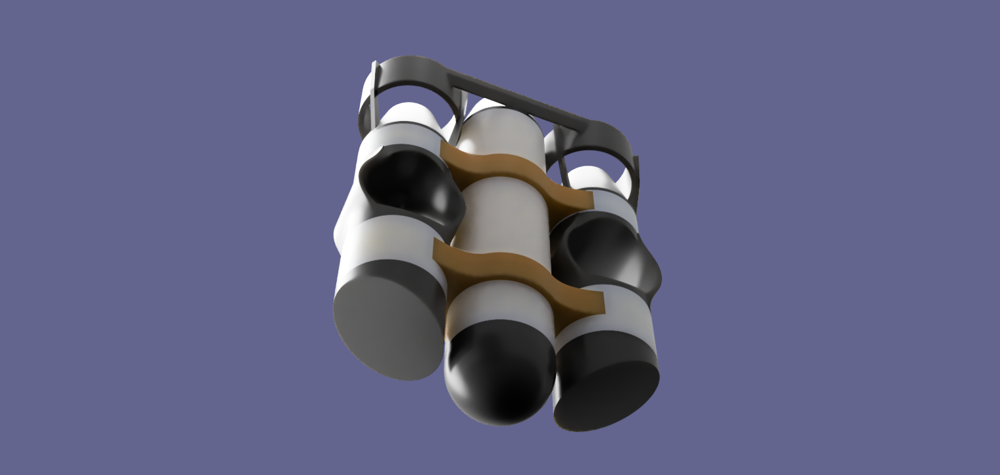

Fred – 3lb Vertical Spinner Battlebot
Built and led a 3lb combat robot team competing in the NHRL League. Fred is a low-profile vertical spinner optimized for energy efficiency, balance, and impact dynamics.
- 3D printed frame with front plate aluminum armor
- Angled wedge design to control opponent engagement
- Custom weapon and drive systems to deliver the most efficient blows

View Full Project →
Edward – ESP32 Personal AI Assistant
Developed a voice assistant using ESP32 and APIs from Deepgram, OpenAI, and Google TTS forclose to real-time response.
- Integrated analog microphone (MAX4466) for audio input
- 3 DOF spherical body
- Custom cloud pipeline for transcription, GPT logic, and TTS
- Currently upgrading to “Archibald” with Raspberry Pi and improved latency
- I will provide a more detailed reository on the updated project when it is completed

FTC Robotics Team – Lead Engineer & Captain
Served as design lead and then team captain for high school FTC team (Toll Gate Robotitans 22156). Used Fusion 360 to rapidly prototype designs for the "Into the Deep" and "Decode" games.
- Managed design and fabrication team
- Oversaw CAD design and analysis on critical assemblies
- Trained underclassmen in mechanical systems and prototyping principles
Shallow Water Drone
Working with my youngest brother to create a small, fast, and relatively cheap shallow water drone
- Designing electrical systems with an esp32-sense board and 4 2200 kv brushless motors
- Desigining the model with PVC piping for the majority of the body to be more cost effective
- Adding additional features such as CO2 powered boosters to make the drone more exciting
- Teaching my brother the design process and engineering principles through a real project
- A more in depth repository will be created when the design is finalized and tested
